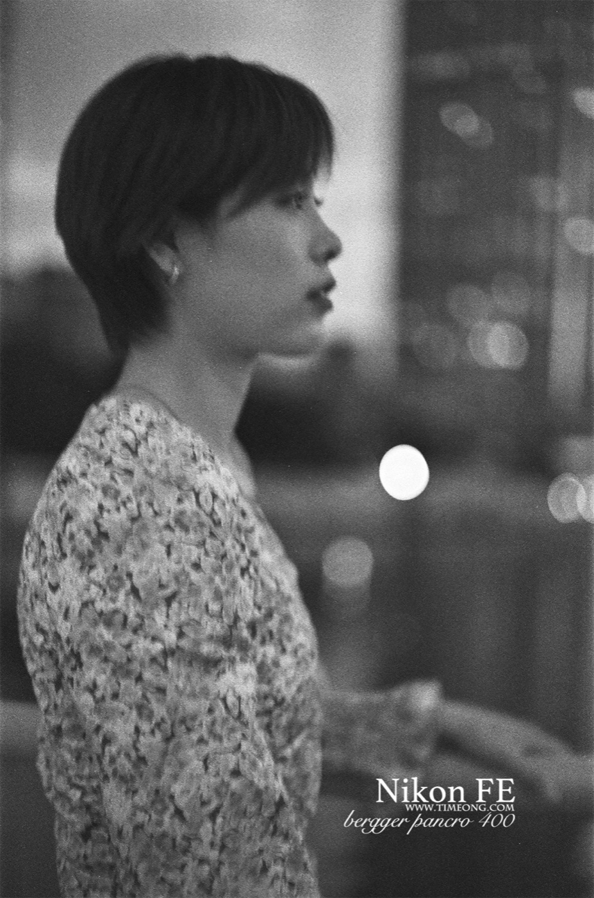

2026 胶片圈三件大事：乐凯回来了、柯达改名了、还多了一卷彩色
今年胶片圈有三件事，不是八卦，是会影响你花钱的：一个是国产彩卷回来了，一个是柯达改了名字（这件事最容易买错），还有一个是新彩色卷上市。
按「对你的影响」从大到小说。
一、乐凯彩色胶卷复产：停产 13 年，红盒白标回来了
2025 年 7 月 17 日，停产 13 年的乐凯彩色胶卷在第 26 届上海国际摄影器材展上正式发售（新华社报道）。
发售的是 乐凯 C200 彩色负片，延续经典的红盒白标设计，每卷 36 张，定位经济实惠的入门级——展会现场价 每卷 52 元、两卷 99 元。
为什么这件事值得单独说：乐凯曾是中国唯一能与柯达、富士正面竞争的品牌，也是当年世界三大彩卷制造商之一。2012 年因为市场萎缩、加上十几种关键原料依赖进口，彩卷停产。
而这次复产不是把老生产线重新开起来——据了解，新一批彩卷用的是国产原料和技术突破后的方案。另有消息称乐凯正在测试 C400（更高感光度版本），但官方尚未确认，先别当真。
对你的实际影响：如果你只是想练手、想大量拍、或者预算有限，国产彩卷的回归意味着多一个便宜且供应更稳的选择——而且它不用等海运。

二、柯达改名：Ektacolor 就是 Portra，Ektapan 就是 T-Max
这是今年最容易踩坑的一条。
柯达的胶片分销权，过去多年由 Kodak Alaris 负责；之后 Eastman Kodak（罗切斯特总部）开始把胶片销售收回自己手里，随之启用了新的产品命名：
对你的实际影响（很实在）：在货架或网店看到 Ektacolor Pro，别以为是柯达出了新卷——它就是 Portra；看到 Ektapan，那就是 T-Max。知道这一点，你就不会把老卷当新卷买、也不会被「新品」的名义多收钱。
三、又多了一卷彩色：Harman Switch Azure 125
Harman——也就是 Ilford 的母公司——近几年一直在往彩色方向扩：2023 年的 Phoenix 200（他们几十年来的第一卷彩色），2025 年的 RED 125（redscale 反转卷），到 2026 年又添了 Switch Azure 125。
这卷用 C-41 工艺冲洗，被官方定位为「创意胶卷」，特点是色彩耦合方式特殊，出来的色调偏冷、偏异色——大致可以理解成官方版的「偏色玩具卷」。
对你的实际影响：如果你已经拍腻了「正常的颜色」，想找一卷自带风格、不用后期调的彩色卷，这类「创意卷」值得试。但别拿它拍需要准确还原的题材——它本来就不是干这个的。

顺带三条小消息
① 柯达反超富士。 FilmFocus 的最新调查显示，柯达已超过富士，成为摄影师使用最多的胶片品牌——这个位置富士坐了很多年。
② 还在涨。 Kodak Alaris 宣布自 2026 年 2 月起每卷上调 1–3 英镑；部分乳剂相比 2025 年涨幅达 20%–50%。黑白相对稳，彩色压力更大。
③ 今年是摄影术发明 200 周年。 1826 年涅普斯拍下第一张照片，到 2026 年整整两百年——所以你会看到各家都在做纪念动作。
胶片没死，它只是换了名字、换了产地，顺便涨了点价。
评论区聊聊
你小时候见过乐凯那盒红白包装吗？最近有没有在货架上撞见过「Ektacolor」这种新名字、差点以为柯达出了新卷？留言说说，让更多人少踩一个坑。
查这些卷的规格与实拍样片
Tri-X 400（=Ektapan 同源） T-Max 400（=Ektapan 同源） T-Max 100（=Ektapan 同源） HP5 Plus Fomapan 100 Classic（便宜档）
去胶卷库看看这几卷
「胶卷档案」是一个可搜索的胶卷资料库：每卷都有规格、特性、使用感受、参考价与实拍样片。搜品牌或型号就能直达。